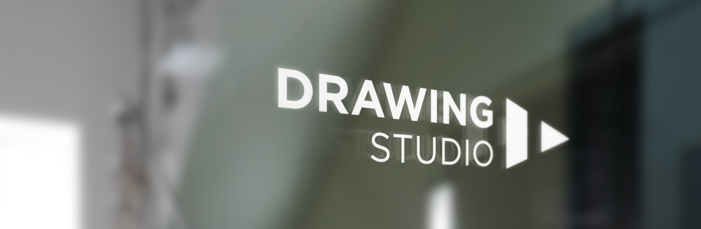
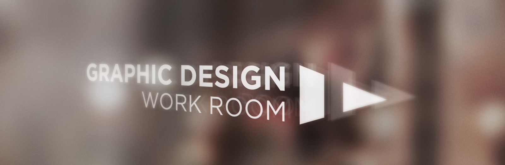
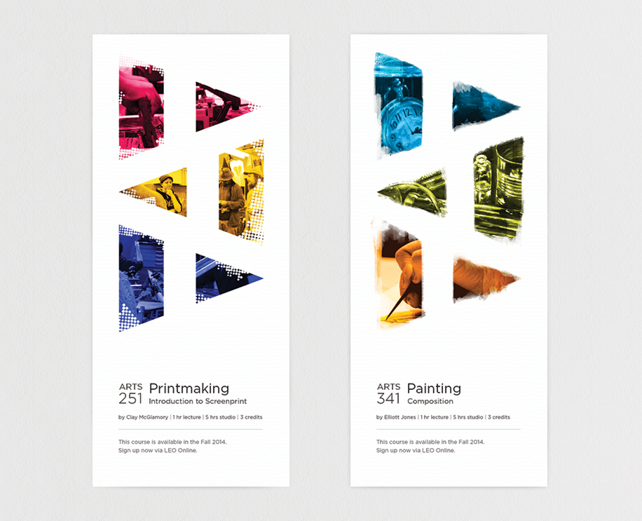
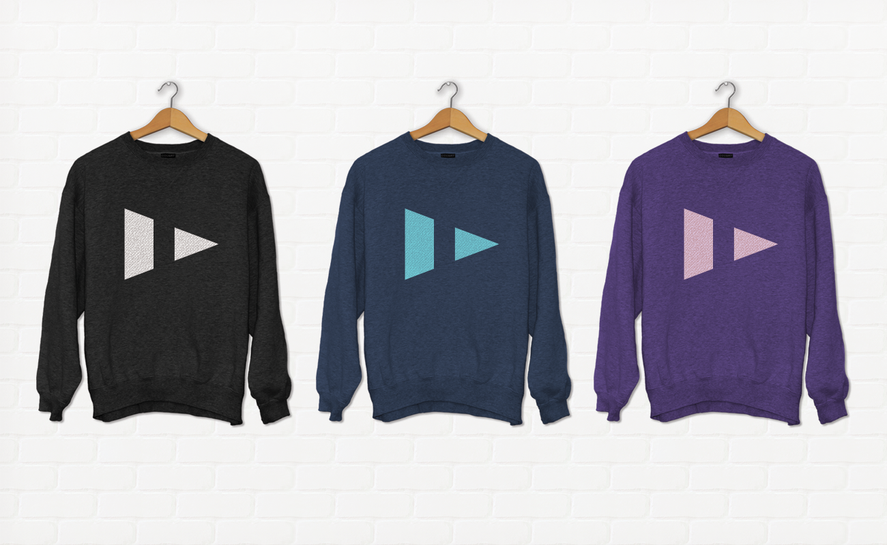
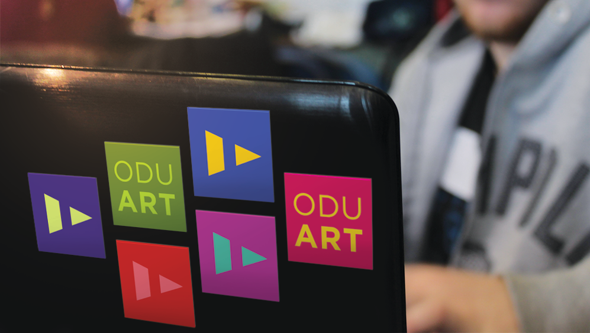

The construction of the new art building calls for a branding system that revitalizes the artistic community of Old Dominion University. The challenge was to create a campaign that promotes the department and showcases the works of its students.
Speculative Work:
ODU Art Department
The logo takes on the letterform ‘A’, and reflects the creativity of the department and the importance of play.
One of the problems of the department is the limited space within the university to show work. The current art gallery is usually used for visiting exhibits and showcases student work once a year. This is not enough to reflect the growing talent in the department. To compensate for this lack of physical space, the campaign is taken to the digital realm.
Art of ODU is a website which features students from different concentrations. This is an avenue wherein they could talk about their current body of work, their processes, and their inspirations.
  The old visual arts building had a blackboard used to announce art club events. However, these organizations have taken to using posters and emails to tell people about their meetings. A blackboard in the new building could be set up, but used for a different purpose: to encourage students to draw and interact with the rest of the department through this medium. The board is refreshed every week to welcome new art.
 